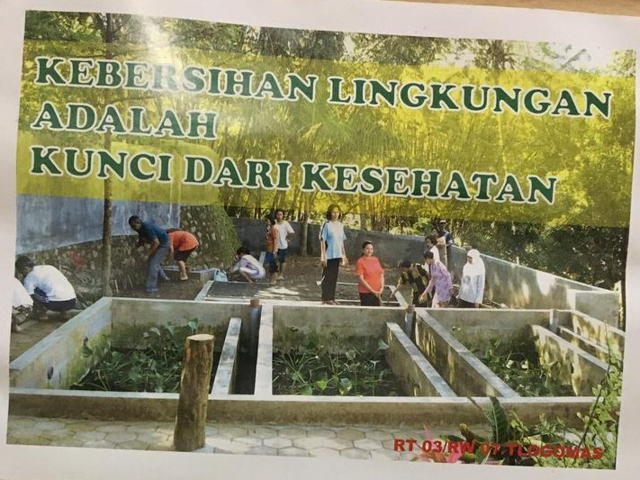
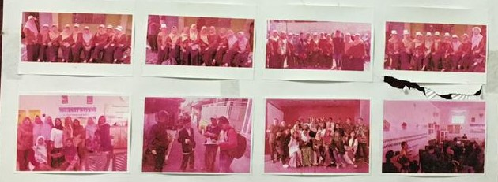
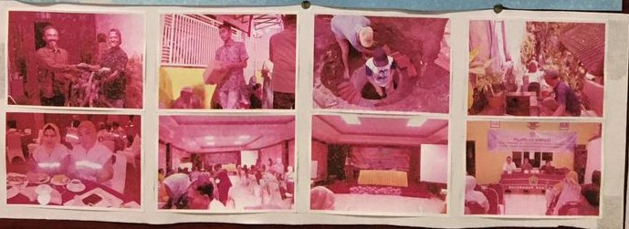
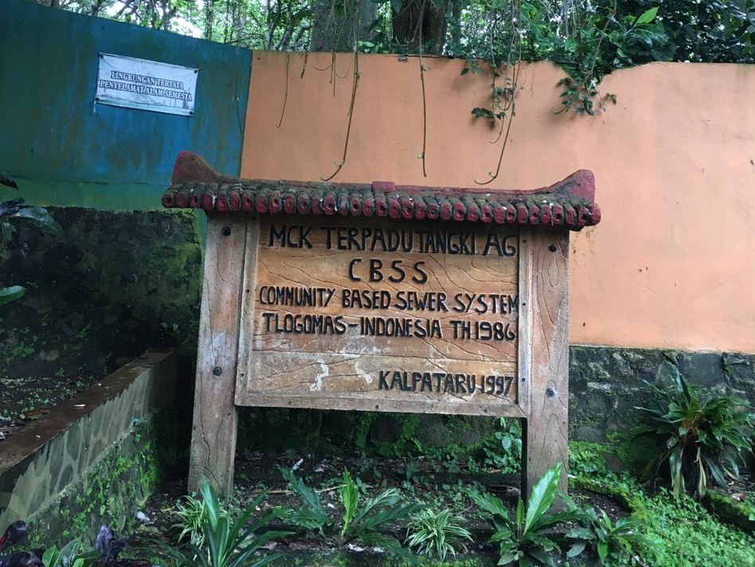
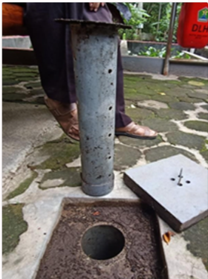
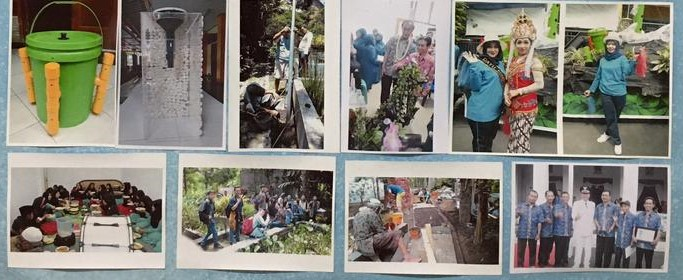

Dasa Wisma XI
Kegiatan untuk pembenahan admiistrasi dari sumber dana kas dawis dan kas PKK

Gotong Royong
Kegiatan untuk membersihkan sekitar kampung Tirtarona

Bersih-bersih Musholla
Kegiatan ini dilaksanakan untuk membersihkan dan merapikan barang-barang yang ada di musholla.

Perbaikan Jalan Raya
Kegiatan untuk memperbaiki jalan raya di sekitar kampung Tirtarona

MCK
Kegiatan untuk membenahi dan memperbaiki fasilitas MCK

Peringatan HUT RI
Kegiatan ini dilaksanakan pada pekan 17 Agustus tiap tahun untuk memperingati HUT RI dengan rangkaian acara upacara atau lomba-lomba

Bipori
Kegiatan ini dilaksanakan untuk merawat atau pemasangan bipori dari sumber dana swadaya

Pengecatan
Kegiatan ini dilaksanakan untuk mengecat berem dari sumber dana swadaya